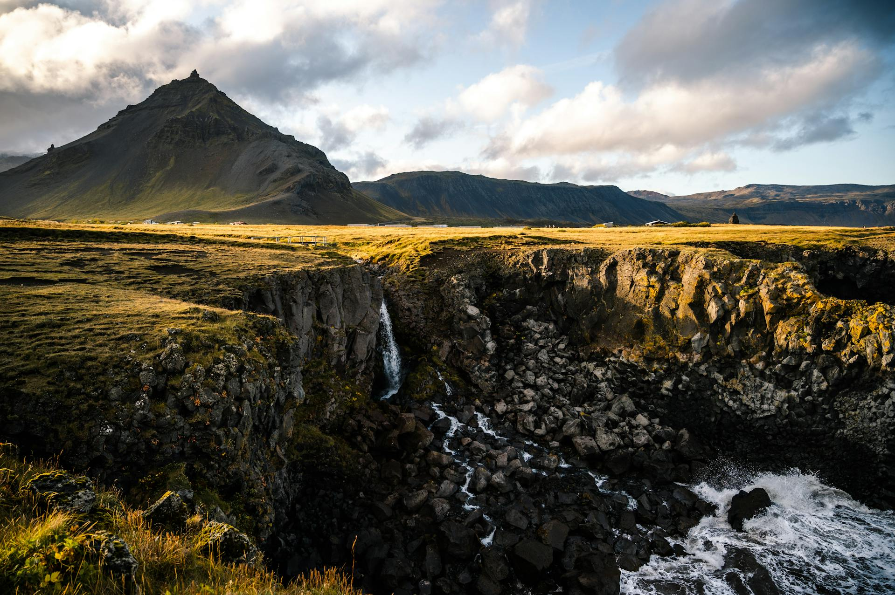
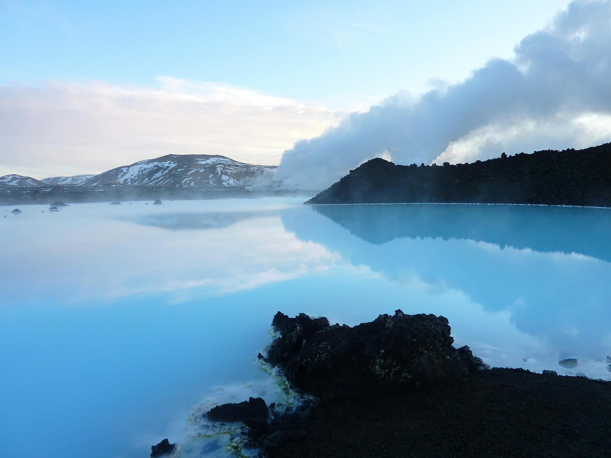

Introdução
A Islândia é uma ilha encantadora e exótica localizada no Atlântico Norte, situada ao sul do Círculo Polar Ártico, entre a Europa e a Groenlândia. Conhecida como a "Terra do Fogo e do Gelo", o país se destaca por sua natureza exuberante e suas paisagens de tirar o fôlego, formadas por uma combinação única de atividades vulcânicas, glaciares imponentes e vastos campos de lava. Com uma área de aproximadamente 103 mil km² e uma população de pouco mais de 370 mil habitantes, a Islândia oferece vastos territórios praticamente intocados pela interferência humana, onde a natureza se manifesta em sua forma mais bruta e pura.
Seu posicionamento sobre a Dorsal Mesoatlântica faz com que a Islândia seja uma das regiões mais geologicamente ativas do mundo, com erupções vulcânicas frequentes, terremotos e a formação contínua de novas paisagens. Esses fatores, combinados com uma rica biodiversidade, criam um ecossistema único, onde é possível observar de perto fenômenos raros, como gêiseres, auroras boreais, praias de areia negra e majestosos fiordes.
Além disso, o país é reconhecido por sua forte consciência ambiental e esforços de preservação. Muitas de suas áreas naturais são protegidas por parques nacionais e reservas, garantindo que suas paisagens permaneçam intocadas para as gerações futuras.
Em termos de importância turística, a Islândia tem se tornado um destino global de ecoturismo, atraindo visitantes que buscam uma experiência imersiva com a natureza em sua forma mais pura. O país oferece uma vasta gama de atividades para os turistas, desde caminhadas nas geleiras, passeios de barco em lagos glaciais, mergulho em fissuras tectônicas, até relaxar em piscinas naturais termais como a famosa Lagoa Azul. As rotas turísticas, como o Círculo Dourado, que conecta algumas das principais atrações do país, facilitam o acesso dos visitantes a essas maravilhas naturais, enquanto promovem um turismo sustentável e responsável.
Por fim, a Islândia é um exemplo de como a natureza e a cultura podem se entrelaçar profundamente. A reverência dos islandeses pela terra está enraizada em suas tradições, mitologias e modos de vida. As sagas nórdicas, por exemplo, frequentemente mencionam elementos naturais que ainda hoje marcam a paisagem do país, como montanhas, rios e cascatas.
Cada canto do país oferece algo surpreendente, desde a força bruta de seus vulcões até a serenidade de seus lagos glaciares. A Islândia é uma verdadeira obra-prima da natureza, onde a aventura, a contemplação e o respeito ao meio ambiente caminham juntos, criando uma experiência única e transformadora para todos os que têm a oportunidade de conhecê-la.